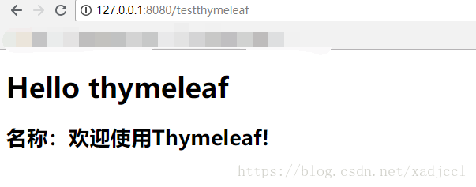
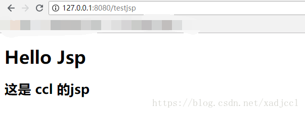

<!DOCTYPE html>
<html>
<head><meta name="generator" content="Hexo 3.8.0">
  <meta charset="utf-8">

  <!-- PACE Progress Bar START -->
  
    <script src="https://raw.githubusercontent.com/HubSpot/pace/v1.0.2/pace.min.js"></script>
    <link rel="stylesheet" href="https://github.com/HubSpot/pace/raw/master/themes/orange/pace-theme-flash.css">
  
  

  <!-- PACE Progress Bar START -->

  
  <title>(四)springboot页面模板与jsp | xadjccl</title>
  <meta name="viewport" content="width=device-width, initial-scale=1, maximum-scale=1">
  
  <meta name="keywords" content="SpringBoot">
  
  
  
  
  <meta name="description" content="概述虽然在我们现在工作中，后端 人员一般只写接口，前后端分离，一般也使用不到页面模板，但是官方推荐使用thymeleaf，这边就蛮记录一下，对于jsp做过web开发的同志应该都会清楚，一些老项目基本是使用jsp，虽然官方已经不建议使用了，但是还是要了解一下。">
<meta name="keywords" content="SpringBoot">
<meta property="og:type" content="article">
<meta property="og:title" content="(四)SpringBoot页面模板与JSP">
<meta property="og:url" content="http://yoursite.com/2019/01/28/(四)SpringBoot页面模板与JSP/index.html">
<meta property="og:site_name" content="xadjccl">
<meta property="og:description" content="概述虽然在我们现在工作中，后端 人员一般只写接口，前后端分离，一般也使用不到页面模板，但是官方推荐使用thymeleaf，这边就蛮记录一下，对于jsp做过web开发的同志应该都会清楚，一些老项目基本是使用jsp，虽然官方已经不建议使用了，但是还是要了解一下。">
<meta property="og:locale" content="zh-CN">
<meta property="og:image" content="http://yoursite.com/resource/image/SpringBootLogo.jpg">
<meta property="og:updated_time" content="2019-01-29T06:24:24.647Z">
<meta name="twitter:card" content="summary">
<meta name="twitter:title" content="(四)SpringBoot页面模板与JSP">
<meta name="twitter:description" content="概述虽然在我们现在工作中，后端 人员一般只写接口，前后端分离，一般也使用不到页面模板，但是官方推荐使用thymeleaf，这边就蛮记录一下，对于jsp做过web开发的同志应该都会清楚，一些老项目基本是使用jsp，虽然官方已经不建议使用了，但是还是要了解一下。">
<meta name="twitter:image" content="http://yoursite.com/resource/image/SpringBootLogo.jpg">
  
    <link rel="alternate" href="/atom.xml" title="xadjccl" type="application/atom+xml">
  
  <link rel="icon" href="/css/images/favicon.ico">
  
    <link href="//fonts.googleapis.com/css?family=Source+Code+Pro" rel="stylesheet" type="text/css">
  
  <link href="https://fonts.googleapis.com/css?family=Open+Sans|Montserrat:700" rel="stylesheet" type="text/css">
  <link href="https://fonts.googleapis.com/css?family=Roboto:400,300,300italic,400italic" rel="stylesheet" type="text/css">
  <link href="https://cdn.bootcss.com/font-awesome/4.6.3/css/font-awesome.min.css" rel="stylesheet">
  <style type="text/css">
    @font-face{font-family:futura-pt;src:url(https://use.typekit.net/af/9749f0/00000000000000000001008f/27/l?subset_id=2&fvd=n5) format("woff2");font-weight:500;font-style:normal;}
    @font-face{font-family:futura-pt;src:url(https://use.typekit.net/af/90cf9f/000000000000000000010091/27/l?subset_id=2&fvd=n7) format("woff2");font-weight:500;font-style:normal;}
    @font-face{font-family:futura-pt;src:url(https://use.typekit.net/af/8a5494/000000000000000000013365/27/l?subset_id=2&fvd=n4) format("woff2");font-weight:lighter;font-style:normal;}
    @font-face{font-family:futura-pt;src:url(https://use.typekit.net/af/d337d8/000000000000000000010095/27/l?subset_id=2&fvd=i4) format("woff2");font-weight:400;font-style:italic;}</style>
    
  <link rel="stylesheet" id="athemes-headings-fonts-css" href="//fonts.googleapis.com/css?family=Yanone+Kaffeesatz%3A200%2C300%2C400%2C700&amp;ver=4.6.1" type="text/css" media="all">
  <link rel="stylesheet" href="/css/style.css">

  <script src="https://code.jquery.com/jquery-3.1.1.min.js"></script>

  <!-- Bootstrap core CSS -->
  <link rel="stylesheet" href="https://netdna.bootstrapcdn.com/bootstrap/3.0.2/css/bootstrap.min.css">
  <link rel="stylesheet" href="/css/hiero.css">
  <link rel="stylesheet" href="/css/glyphs.css">
  

  <!-- Custom CSS -->
  <link rel="stylesheet" href="/css/my.css">
  <!-- Google Adsense -->
  
  <script async src="//pagead2.googlesyndication.com/pagead/js/adsbygoogle.js"></script>
  <script>
      (adsbygoogle = window.adsbygoogle || []).push({
          google_ad_client: "ca-pub-0123456789ABCDEF",
          enable_page_level_ads: true
      });
  </script>
  
</head>
</html>
<script>
var themeMenus = {};

  themeMenus["/"] = "首页"; 

  themeMenus["/archives"] = "归档"; 

  themeMenus["/categories"] = "分类"; 

  themeMenus["/tags"] = "标签"; 

  themeMenus["/about"] = "关于"; 

</script>


  <body data-spy="scroll" data-target="#toc" data-offset="50">


  <header id="allheader" class="site-header" role="banner">
  <div class="clearfix container">
      <div class="site-branding">

          <h1 class="site-title">
            
              <a href="/" title="xadjccl" rel="home"> xadjccl </a>
            
          </h1>

          
            
          <nav id="main-navigation" class="main-navigation" role="navigation">
            <a class="nav-open">Menu</a>
            <a class="nav-close">Close</a>
            <div class="clearfix sf-menu">

              <ul id="main-nav" class="nmenu sf-js-enabled">
                    
                      <li class="menu-item menu-item-type-custom menu-item-object-custom menu-item-home menu-item-1663"> <a class="" href="/">首页</a> </li>
                    
                      <li class="menu-item menu-item-type-custom menu-item-object-custom menu-item-home menu-item-1663"> <a class="" href="/archives">归档</a> </li>
                    
                      <li class="menu-item menu-item-type-custom menu-item-object-custom menu-item-home menu-item-1663"> <a class="" href="/categories">分类</a> </li>
                    
                      <li class="menu-item menu-item-type-custom menu-item-object-custom menu-item-home menu-item-1663"> <a class="" href="/tags">标签</a> </li>
                    
                      <li class="menu-item menu-item-type-custom menu-item-object-custom menu-item-home menu-item-1663"> <a class="" href="/about">关于</a> </li>
                    
              </ul>
            </div>
          </nav>


      </div>
  </div>
</header>


  <div id="originBgDiv" style="background: #fff; width: 100%;">

      <div style="max-height:600px; overflow: hidden;  display: flex; display: -webkit-flex; align-items: center;">
        
      </div>

  </div>

  <script>
  function setAboutIMG(){
      var imgUrls = "css/images/pose.jpg,https://source.unsplash.com/collection/954550/1920x1080".split(",");
      var random = Math.floor((Math.random() * imgUrls.length ));
      if (imgUrls[random].startsWith('http') || imgUrls[random].indexOf('://') >= 0) {
        document.getElementById("originBg").src=imgUrls[random];
      } else {
        document.getElementById("originBg").src='/' + imgUrls[random];
      }
  }
  bgDiv=document.getElementById("originBgDiv");
  if(location.pathname.match('about')){
    setAboutIMG();
    bgDiv.style.display='block';
  }else{
    bgDiv.style.display='none';
  }
  </script>


  <div id="container">
    <div id="wrap">
            
      <div id="content" class="outer">
        
          <section id="main" style="float:none;"><article id="post-(四)SpringBoot页面模板与JSP" style="width: 66%; float:left;" class="article article-type-post" itemscope="" itemprop="blogPost">
  <div id="articleInner" class="clearfix post-1016 post type-post status-publish format-standard has-post-thumbnail hentry category-template-2 category-uncategorized tag-codex tag-edge-case tag-featured-image tag-image tag-template">
    
<div class="article-gallery">
  <div class="article-gallery-photos">
    
      <a class="article-gallery-img fancybox" href="/../../../../resource/image/SpringBootLogo.jpg" rel="gallery_cjrhd0qql0003709lfwzeedsp">
        
      </a>
    
  </div>
</div>

    
      <header class="article-header">
        
  
    <h1 class="thumb" itemprop="name">
      (四)SpringBoot页面模板与JSP
    </h1>
  

      </header>
    
    <div class="article-meta">
      
	Posted on <a href="/2019/01/28/(四)SpringBoot页面模板与JSP/" class="article-date">
	  <time datetime="2019-01-28T09:54:33.444Z" itemprop="datePublished">一月 28, 2019</time>
	</a>

      
	<span id="busuanzi_container_page_pv">
	  本文总阅读量<span id="busuanzi_value_page_pv"></span>次
	</span>

    </div>
    <div class="article-entry" itemprop="articleBody">
      
        <h1 id="概述"><a href="#概述" class="headerlink" title="概述"></a>概述</h1><p>虽然在我们现在工作中，后端 人员一般只写接口，前后端分离，一般也使用不到页面模板，但是官方推荐使用thymeleaf，这边就蛮记录一下，对于jsp做过web开发的同志应该都会清楚，一些老项目基本是使用jsp，虽然官方已经不建议使用了，但是还是要了解一下。<a id="more"></a> </p>
<h1 id="Thymeleaf"><a href="#Thymeleaf" class="headerlink" title="Thymeleaf"></a>Thymeleaf</h1><p> 了解thymeleaf之前我们要知道，SpringBoot默认的几个静态页面的目录：</p>
<p>/static、/public、/resources 、/META-INF/resources</p>
<h2 id="创建项目"><a href="#创建项目" class="headerlink" title="创建项目"></a>创建项目</h2><p>我们可以将项目中使用到的静态文件放在这几个项目中</p>
<p>首先我们创建一个SpringBoot项目</p>
<p>1.加入thymeleaf依赖</p>
<pre><code>&lt;dependency&gt;
    &lt;groupId&gt;org.springframework.boot&lt;/groupId&gt;
    &lt;artifactId&gt;spring-boot-starter-thymeleaf&lt;/artifactId&gt;
&lt;/dependency&gt;  
</code></pre><p> 2.编写controller</p>
<pre><code>@Controller

public class ThymeleafController {
    @RequestMapping(value = &quot;/testthymeleaf&quot;)
    public ModelAndView test(ModelAndView mv) {
        mv.setViewName(&quot;thymeleaf1&quot;);
        mv.addObject(&quot;name&quot;,&quot;欢迎使用Thymeleaf!&quot;);
        return mv;
    }
}  
</code></pre><p>3.在src/main/resources/templates目录下创建 thymeleaf.html</p>
<pre><code>&lt;!DOCTYPE html&gt;
&lt;html&gt;
&lt;head lang=&quot;en&quot;&gt;
    &lt;meta charset=&quot;UTF-8&quot; /&gt;
    &lt;title&gt;thymeleaf demo&lt;/title&gt;
&lt;/head&gt;
&lt;body&gt;
&lt;h1&gt;Hello thymeleaf&lt;/h1&gt;

&lt;h2 th:text=&quot;&apos;名称：&apos;+${name}&quot;&gt;默认值&lt;/h2&gt;
&lt;/body&gt;
&lt;/html&gt;  
</code></pre><p> 4.配置thymel信息，在application.properties下配置</p>
<pre><code>#thymelea模板配置
spring.thymeleaf.prefix=classpath:/templates/
spring.thymeleaf.suffix=.html
spring.thymeleaf.mode=HTML5
spring.thymeleaf.encoding=UTF-8
spring.thymeleaf.content-type=text/html
spring.thymeleaf.cache=false
spring.resources.chain.strategy.content.enabled=true
spring.resources.chain.strategy.content.paths=/**  
</code></pre><p> 5.启动项目，浏览器访问<a href="http://127.0.0.1:8080/testthymeleaf" target="_blank" rel="noopener">http://127.0.0.1:8080/testthymeleaf</a><br> </p>
<p>至此，Thymeleaf整合成功，当然thymeleaf还有很多内容，但是我个人也没用过，只是稍微了解 。</p>
<p>如果按照上面的做法 之后访问报404 的话 检查一下SpringBoot的版本，设置为1.3.3就可以解决了。</p>
<h1 id="JSP"><a href="#JSP" class="headerlink" title="JSP"></a>JSP</h1><p>对于一些老项目基本都是使用jsp，所以SpringBoot也有提供对jsp的支持</p>
<p>1.添加jsp的依赖</p>
<pre><code>&lt;dependency&gt;
    &lt;groupId&gt;org.apache.tomcat.embed&lt;/groupId&gt;
    &lt;artifactId&gt;tomcat-embed-jasper&lt;/artifactId&gt;
&lt;/dependency&gt;  
</code></pre><p>2.编写controller</p>
<pre><code>@Controller
public class JspController {

    @GetMapping(&quot;/testjsp&quot;)
    public ModelAndView index() {
        ModelAndView mv = new ModelAndView();
        mv.addObject(&quot;name&quot;, &quot;ccl&quot;);
        //模版名称，实际的目录为：src/main/webapp/jsp/index.html
        mv.setViewName(&quot;test&quot;);
        return mv;
    }
}  
</code></pre><p> 3.在src/main/webapp/WEB-INF/jsp下创建test.jsp  </p>
<pre><code>&lt;%@ page language=&quot;java&quot; contentType=&quot;text/html; charset=UTF-8&quot;
pageEncoding=&quot;UTF-8&quot;%&gt;
&lt;!DOCTYPE html PUBLIC &quot;-//W3C//DTD HTML 4.01 Transitional//EN&quot; &quot;http://www.w3.org/TR/html4/loose.dtd&quot;&gt;
&lt;html&gt;
&lt;head&gt;
&lt;meta http-equiv=&quot;Content-Type&quot; content=&quot;text/html; charsetUTF-8&quot;&gt;
&lt;title&gt;jsp demo &lt;/title&gt;
&lt;/head&gt;
&lt;body&gt;
&lt;h1&gt;Hello Jsp&lt;/h1&gt;
&lt;h2 &gt;这是 ${name}  的jsp&lt;/h2&gt;
&lt;/body&gt;
&lt;/html&gt;  
</code></pre><p>4.配置jsp，在application.properties里配置：</p>
<pre><code>#jsp 支持
spring.mvc.view.suffix=.jsp
spring.mvc.view.prefix=/WEB-INF/jsp/  
</code></pre><p>如果SpringBoot的版本太低的话配置为：</p>
<pre><code>#jsp 支持

spring.view.suffix=.jsp
spring.view.prefix=/WEB-INF/jsp/  
</code></pre><p>5.启动项目，浏览器访问<a href="http://127.0.0.1:8080/testjsp" target="_blank" rel="noopener">http://127.0.0.1:8080/testjsp</a><br> </p>
<p>至此。SpringBoot整合jsp成功。 </p>

      
    </div>
    <footer class="entry-meta entry-footer">
      
	<span class="ico-folder"></span>
    <a class="article-category-link" href="/categories/SpringBoot/">SpringBoot</a>

      
  <span class="ico-tags"></span>
  <ul class="article-tag-list"><li class="article-tag-list-item"><a class="article-tag-list-link" href="/tags/SpringBoot/">SpringBoot</a></li></ul>

      
            
      
    </footer>
  </div>
  
    
<nav id="article-nav">
  
  
    <a href="/2019/01/28/(三)SpringBoot配置和多环境/" id="article-nav-older" class="article-nav-link-wrap">
      <strong class="article-nav-caption">下一篇</strong>
      <div class="article-nav-title">(三)SpringBoot配置和多环境</div>
    </a>
  
</nav>

  
</article>

<!-- Table of Contents -->

  <aside id="sidebar">
    <div id="toc" class="toc-article" style="overflow-y: scroll; max-width: 28%;">
    <strong class="toc-title">文章目录</strong>
    
      <ol class="nav"><li class="nav-item nav-level-1"><a class="nav-link" href="#概述"><span class="nav-number">1.</span> <span class="nav-text">概述</span></a></li><li class="nav-item nav-level-1"><a class="nav-link" href="#Thymeleaf"><span class="nav-number">2.</span> <span class="nav-text">Thymeleaf</span></a><ol class="nav-child"><li class="nav-item nav-level-2"><a class="nav-link" href="#创建项目"><span class="nav-number">2.1.</span> <span class="nav-text">创建项目</span></a></li></ol></li><li class="nav-item nav-level-1"><a class="nav-link" href="#JSP"><span class="nav-number">3.</span> <span class="nav-text">JSP</span></a></li></ol>
    
    </div>
  </aside>
</section>
        
      </div>
      <footer id="footer" class="site-footer">
  

  <div class="clearfix container">
      <div class="site-info">
	      &copy; 2019 xadjccl All Rights Reserved.
          
            <span id="busuanzi_container_site_uv">
              本站访客数<span id="busuanzi_value_site_uv"></span>人次  
              本站总访问量<span id="busuanzi_value_site_pv"></span>次
            </span>
          
      </div>
      <div class="site-credit">
        Theme by <a href="https://github.com/iTimeTraveler/hexo-theme-hiero" target="_blank">hiero</a>
      </div>
  </div>
</footer>


<!-- min height -->

<script>
    var contentdiv = document.getElementById("content");

    contentdiv.style.minHeight = document.body.offsetHeight - document.getElementById("allheader").offsetHeight - document.getElementById("footer").offsetHeight + "px";
</script>

<!-- Custome JS -->
<script src="/js/my.js"></script>
    </div>
    <!-- <nav id="mobile-nav">
  
    <a href="/" class="mobile-nav-link">Home</a>
  
    <a href="/archives" class="mobile-nav-link">Archives</a>
  
    <a href="/categories" class="mobile-nav-link">Categories</a>
  
    <a href="/tags" class="mobile-nav-link">Tags</a>
  
    <a href="/about" class="mobile-nav-link">About</a>
  
</nav> -->
    

<!-- mathjax config similar to math.stackexchange -->

<script type="text/x-mathjax-config">
  MathJax.Hub.Config({
    tex2jax: {
      inlineMath: [ ['$','$'], ["\\(","\\)"] ],
      processEscapes: true
    }
  });
</script>

<script type="text/x-mathjax-config">
    MathJax.Hub.Config({
      tex2jax: {
        skipTags: ['script', 'noscript', 'style', 'textarea', 'pre', 'code']
      }
    });
</script>

<script type="text/x-mathjax-config">
    MathJax.Hub.Queue(function() {
        var all = MathJax.Hub.getAllJax(), i;
        for(i=0; i < all.length; i += 1) {
            all[i].SourceElement().parentNode.className += ' has-jax';
        }
    });
</script>

<script type="text/javascript" src="https://cdnjs.cloudflare.com/ajax/libs/mathjax/2.7.4/MathJax.js?config=TeX-AMS-MML_HTMLorMML">
</script>


  <link rel="stylesheet" href="https://cdnjs.cloudflare.com/ajax/libs/fancybox/2.1.5/jquery.fancybox.min.css">
  <script src="https://cdnjs.cloudflare.com/ajax/libs/fancybox/2.1.5/jquery.fancybox.min.js"></script>


<script src="/js/scripts.js"></script>
<script src="https://stackpath.bootstrapcdn.com/bootstrap/3.3.7/js/bootstrap.min.js"></script>
<script src="/js/main.js"></script>


  <div style="display: none;">
    <script src="https://s95.cnzz.com/z_stat.php?id=1260716016&web_id=1260716016" language="JavaScript"></script>
  </div>


	<script async src="https://dnqof95d40fo6.cloudfront.net/atw7f8.js">
	</script>


  </div>

  <a id="rocket" href="#top" class=""></a>
  <script type="text/javascript" src="/js/totop.js" async=""></script>
</body>
</html>
